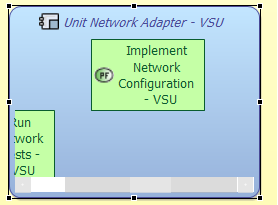
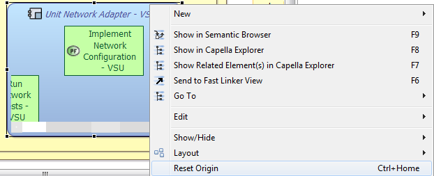
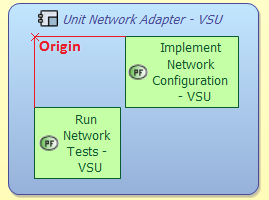

Reset origin tool can also be used directly on the diagram to move all elements at the top left corner of the diagram without removing the space between them.
Reset origin tool is useful when some elements are not visible because their layout is not centered. Reset origin tools will automatically adjust the layout in order to have the origin at the top left of the container or editor.



The origin is now on the top left of Logical System, which results in a better layout for the user.
|
|
Reset origin tool can also be used directly on the diagram to move all elements at the top left corner of the diagram without removing the space between them. |
The shortcut Ctrl + Mouse wheel enables the user to zoom or zoom out diagram if needed. The zoom is done on the mouse location and not on the center of the editor.